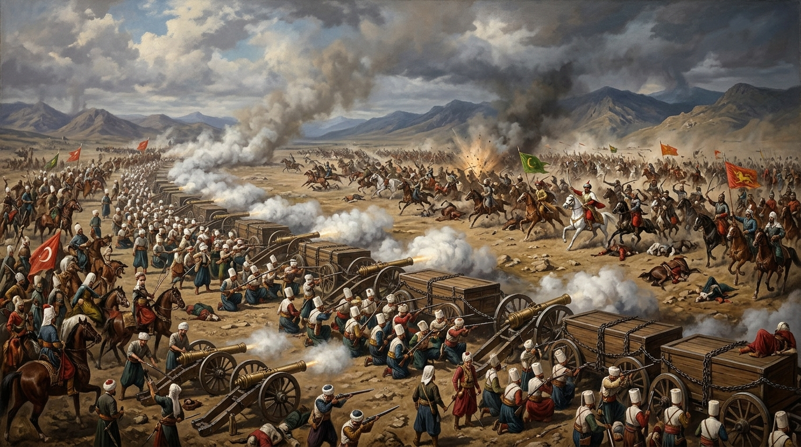
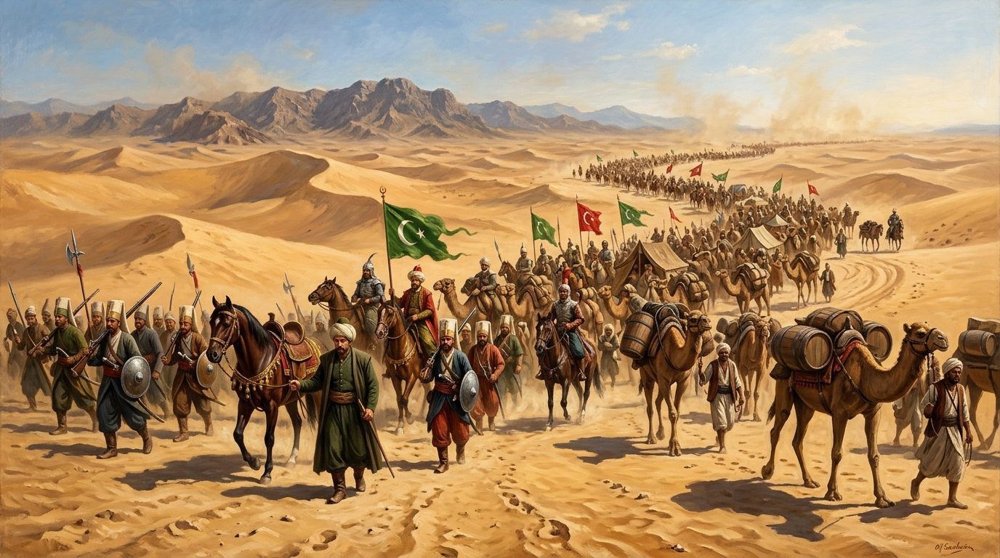

I. Selim (Yavuz) dönemine (1512–1520) ait askeri sefer lojistiğini, WGS84 menzil koordinatlarını, dönüm noktası meydan muharebelerini ve birincil kaynak vakayinâmelerini buluşturan akademik araştırma arşivi.

Üsküdar ordugâhından Sivas büyük teftiş merkezine, Erzurum ve Çaldıran sahrasından Safevî payitahtı Tebriz'e uzanan 21 menzillik devasa lojistik intikal. Tabur cengi, topçu tahkimatı ve Trabzon ikmal hattı.
Kayseri'den Develi, Pınarbaşı ve Göksun geçitlerine; sarp Turnadağı yamaçlarından Elbistan ve Maraş'a uzanan 10 menzillik dağ harekâtı. Anadolu Türk siyasi birliğinin kesinleştiği stratejik intikal.
Diyarbakır İçkale'den Mazıdağı ve Derik geçitlerine, Koçhisar (Hanik) zafer sahasından Mardin, Nusaybin ve Urfa kalelerine uzanan 10 menzillik Güneydoğu feth-i mübîni.

Mercidâbık zaferiyle açılan Suriye kapılarından Şam'a, su kervanlarıyla zayiatsız geçilen 10 günlük efsanevi Sina Çölü intikalinden Ridâniye ve Kahire'ye uzanan 19 menzillik feth-i mübîn.
| Yıl | Muharebe / Sefer | Bölge | Komutanlar | Taktik Dönüm Noktası |
|---|---|---|---|---|
| 1514 | Çaldıran Meydan Muharebesi | Çaldıran Ovası, Doğu Anadolu | Yavuz Sultan Selim vs Şah I. İsmail | Top arabalarının zincirlenmesi (Tabur Cengi), salvo tüfek ateşi |
| 1515 | Kemah Kalesi Fethi | Kemah, Fırat Boyu | Bıyıklı Mehmed Paşa | Sarp burçların kuşatılması, Doğu Anadolu lojistiğinin güvenceye alınması |
| 1515 | Turnadağı Muharebesi | Turnadağı / Göksun, Maraş | Hadım Sinan Paşa vs Alâüddevle Bozkurt | Sarp dağ geçidi çevirmesi, Anadolu Türk siyasi birliğinin kesinleşmesi |
| 1516 | Koçhisar (Hanik) Muharebesi | Kızıltepe / Mardin Civarı | Bıyıklı Mehmed Paşa & İdris-i Bitlisî vs Karahan | Tüfek pususu ve Kürt aşiret süvari kıskacı, Güneydoğu'nun nihai fethi |
| 1516 | Mercidâbık Meydan Muharebesi | Mercidâbık Ovası, Halep Kuzeyi | Yavuz Sultan Selim vs Sultan Kansu Gavri | Hafif sahra topları salvosu, Suriye ve Filistin'in fethi |
| 1516 | Han Yûnus (Gazze) Muharebesi | Han Yûnus, Güney Filistin | Hadım Sinan Paşa vs Canbirdi Gazâlî | Çöl eşiğinde öncü pusu kırma manevrası, Sina ikmal kapısının açılması |
| 1517 | Ridâniye Meydan Muharebesi | El-Mukattam & Ridâniye, Kahire | Yavuz Sultan Selim vs Sultan Tomanbay | Mukattam Dağı çevirmesiyle Memlûk sabit top bataryalarının arkalanması |